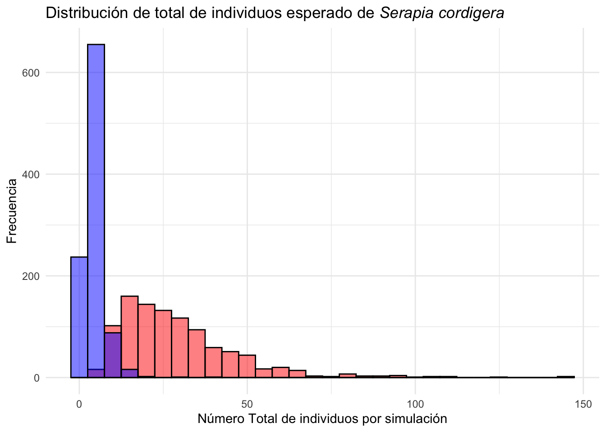
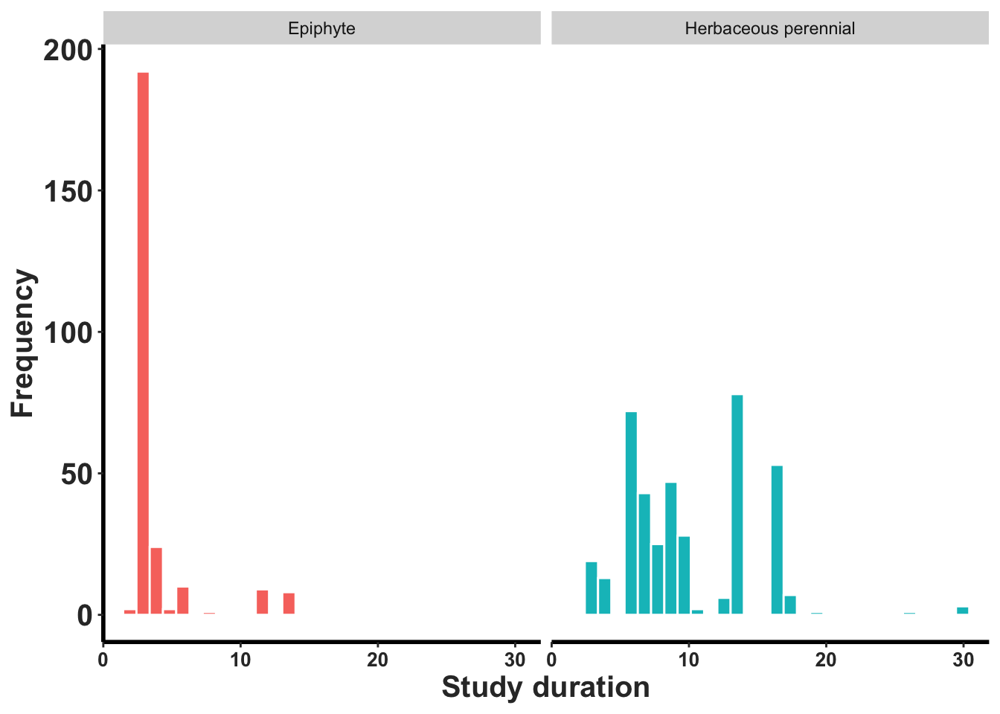

Capítulo 12 Elasticidad
Autores: “Demetria Mondragón, Ernesto Mujica y Elaine González”
12.2 Qué es la Elasticidad
Las matrices de elasticidad son un complemento de las matrices de transición, que nos permiten evaluar el efecto de “pequeños cambios” en los parámetros de la matriz de transición sobre la tasa de crecimiento de la población (\(\lambda\)); así, las entradas de la matriz de elasticidad que presenten los valores más altos, serán aquellas que más impacto tendrán sobre el comportamiento de lambda (\(\lambda\)) (Caswell 2001; Kroon et al. 1986). Esos cambios pueden tener un efecto positivo o negativo sobre el crecimiento poblacional (Caswell 2001). El uso de las elasticidades en ecología de plantas se remonta a 1974 cuando Sarukan y Gadgil trataron de evaluar la importancia relativa de la reproducción sexual vsv la reproducción vegetativa de tres especies de Ranunculus (Sarukhan and Gadgil 1974; Kroon et al. 1986).
El concepto de elasticidad en biología es un método orientado a evaluar el cambio proporcional en una variable en respuesta a un cambio proporcional en otra variable. En términos de matrices de transición, la elasticidad es una medida de la sensibilidad de la tasa de crecimiento poblacional a cambios. En otra palabra si uno cambia uno de los parámetros de la matriz de transición, la elasticidad mide cuánto cambiaría la tasa de crecimiento poblacional (Kroon et al. 1986). En biología, la elasticidad es una herramienta para entender la importancia del cambio de cada etapa de la historia de vida sobre la tasa de crecimiento poblacional ya que permite identificar las etapas que más contribuyen a la tasa de crecimiento poblacional. Esa herramienta es muy útil para la conservación de especies y para la gestión de recursos naturales por que en parte nos indica cuan sensitiva esta el crecimiento poblacional cuando se cambia los parámetros de la historia de vida (las transiciones, supervivencia y fecundidad) de una especie.
La elasticidad en la Biología de la Conservación no solo se basa en la observación de su matriz, que con sus valores podemos interpretar la vulnerabilidad de la población a las transiciones. La elasticidad predice el efecto futuro de las probabilidades medias de hechos pasados, respondiendo a la pregunta: ¿cuál de los cambios en las tasas vitales, tomados de uno en uno y manteniendo constante los demás, produciría el mayor efecto en la tasa de crecimiento de la población? En otras palabras, la elasticidad nos dará los efectos de pequeños cambios en las tasas vitales. Las tasas vitales con una baja elasticidad suelen tener una alta variabilidad, mientras que las de elevada suelen variar poco. La variabilidad de los parámetros vitales suele estar negativamente correlacionada con su elasticidad media [ehrlen1998direct]. Por ello no solamente se debe tener en cuenta cuan sensible es lambda (\(\lambda\)) a una transición, sino también, cuanta variación en esa transición puede ocurrir, o de hecho ocurre, y cómo covaría con otras transiciones [ehrlen1998direct].
En términos matemáticos la elasticidad es el cambio proporcional de \(\lambda\) con cambios proporcionales en los parámetros de la matriz. En otras palabras, por cada unidad de cambio en un parámetro se reflejará en un cambio en \(\lambda\) (Kroon et al. 1986). La elasticidad \(e_{ij}\) de \(\lambda\) con respecto \(a_{ij}\) (es el elemento i, j de la matriz) es definida como:
\[e_{ij}=\frac{a_{ij}}{\lambda}\frac{\alpha}{\alpha_{ij}}\]
\[=\frac{\alpha log \lambda}{\alpha log a_{ij}}\]
La elasticidad \(e_{ij}\) es solamente la pendiente del log de \(\lambda\) gráficado contra log \(e_{ij}\). Debido a que los incrementos sobre una escala logarítmica corresponden a cambios similares proporcionales en una escala aritmética, por consecuencia la elasticidad mide la sensibilidad proporcional. Las elasticidades pueden ser calculadas y mostradas de manera conveniente como una matriz de elasticidad.
\[E=\frac{a_{ij}}{\lambda}\frac{\alpha}{\alpha_{ij}}\] \[=\frac{1}{\lambda}{S}\circ A\] Donde S es la matriz de sensibilidad y \(\circ\) el producto de Hadamard (Caswell 2001).
Las matrices de elasticidad tienen la ventaja de que la suma de las entradas suman a uno, por lo que permite sumar diferentes entradas de la matriz, para evaluar la importancia de procesos (crecimiento, decrecimiento, permanencia o reproducción) o estadios sobre la \(\lambda\) (Silvertown, Franco, and Menges 1996), por lo que ha sido una herramienta ampliamente utilizada para el desarrollo de planes de manejo y conservación de especies ya que permite identificar a que estadios o procesos se deben enfocar los esfuerzos de conservación [Mondragón (2009); tremblay1997lepanthes; Berry and Cleavitt (2021); timsina2021six] o en caso opuesto para determinar que estadios pueden ser utilizados sin impactar fuertemente a la población (Mondragón 2009). En el último concepto si tuviésemos que remover individuos de la población, cuál de los estados tuviese el menos impacto sobre la supervivencia de la población si fuesen removido.
12.2.1 Sensibilidad y Elasticidad
La diferencia entre sensibilidad y elasticidad es que la sensibilidad mide el impacto en λ de cambiar la magnitud absoluta de una tasa vital particular en relación con el cambio de otras tasas vitales (Caswell 1989), lo que implica que los cambios en las tasas de crecimiento, permanencia tendrán un valor de uno (ya que se estas tasas son proporciones), en tanto que los cambios en fecundidad podrán ser desde uno hasta cientos o miles, ya que se la fecundidad se calcula con en base a otra escala (tal como número de semillas o plántulas). La elasticidad por su parte, calcula la sensibilidad proporcional de λ a los cambios en una tasa vital (Kroon et al. 1986) evitando de esta forma el efecto de la magnitud del cambio. Cuanto mayor sea el valor de la elasticidad de la tasa vital, mayor será la contribución relativa de esa tasa vital a \(\lambda\).
12.2.2 El impacto de cambio en las etapas
Tomando como ejemplo la matriz de elasticidad de Erycina crista-galli una orquídea de ramilla (Mondragón, Maldonado, and Aguilar-Santelises 2007), podremos recapitular todo lo previamente dicho (Tabla 1), así, lo primero que hay que recalcar es que el valor más alto de elasticidad para esta orquídea corresponde a la permanencia de los individuos adultos 2, es decir que cualquier pequeño cambio en el valor de dicha entrada (en la matriz de transición), tendrá el mayor impacto en el valor de al comparar con otras estados de vida; segundo, es importante observar que al sumar todas las entradas de la matriz se obtiene un valor de uno. Lo mismo se mantiene cuando se suman todos los valores de elasticidad por estadio o por proceso. Es decir, si sumamos todos los valores de cada columna, tendremos el valor de elasticidad de cada estadio, para este caso el valor más alto lo ostenta el estadio de adultos 2 (0.818), lo que implica que el destino de la población de E. crista-galli* depende mayormente de lo que les pase a los individuos adultos.
etapas <- c ("plántula", "juvenil", "adulto1", "adulto2")
ec <- matrix (c(0, 0, 0.004, 0.062,
0.195, 0, 0, 0,
0.171, 0.120, 0.053, 0.04,
0.073, 0.10, 0.435, 0.447),
nrow = 4, ncol=4, byrow = TRUE, dimnames = list(etapas, etapas))
ec## plántula juvenil adulto1 adulto2
## plántula 0.000 0.00 0.004 0.062
## juvenil 0.195 0.00 0.000 0.000
## adulto1 0.171 0.12 0.053 0.040
## adulto2 0.073 0.10 0.435 0.447## plántula juvenil adulto1 adulto2
## plántula 0.00000000 0.000000000 0.0005286107 0.05824146
## juvenil 0.01493867 0.000000000 0.0000000000 0.00000000
## adulto1 0.03007910 0.007893670 0.0109312556 0.05864336
## adulto2 0.01375230 0.007045004 0.0960875206 0.70185904# Convertir la matriz de elasticidad en un data frame
ec_df=as.data.frame(elas(ec)) |> round(3)
# Sumar las elasticidades por etapas y añadir una fila con las sumas
ec_df=ec_df %>% bind_rows(summarise_all(., ~if(is.numeric(.)) sum(.) else "Total"))
ec_df %>%
gt() %>%
data_color(
columns = c(adulto2),
colors = c("blue"),
domain = NULL
) %>%
tab_style(
style = cell_fill(color = 'black'),
locations = cells_body(
columns = c(adulto2),
rows = 5
))## Warning: Since gt v0.9.0, the `colors` argument has been deprecated.
## • Please use the `palette` argument to define a color palette.
## This warning is displayed once every 8 hours.| plántula | juvenil | adulto1 | adulto2 |
|---|---|---|---|
| 0.000 | 0.000 | 0.001 | 0.058 |
| 0.015 | 0.000 | 0.000 | 0.000 |
| 0.030 | 0.008 | 0.011 | 0.059 |
| 0.014 | 0.007 | 0.096 | 0.702 |
| 0.059 | 0.015 | 0.108 | 0.819 |
12.2.3 Efecto de cambio en las tansiciones, de crecimiento, permanencia y fecundidad
En la tabla se ve los diferentes valores de elasticidad por procesos en Erycina crista-galli (Mondragón, Maldonado, and Aguilar-Santelises 2007) y el impacto por diferentes procesos de la historia de vida de la población. Ahora, si lo que quisiéramos saber es que proceso o tasa vital es lo que rige el comportamiento de la población, lo que se hace es sumar las entradas de la matriz que lo representan, en este caso hemos puesto en diferentes colores las estradas que manifiestan cada tasa, en rojo es la permanencia, en azul el crecimiento, en amarillo el decrecimiento o retrogresión y en verde la fecundidad. Eso nos permite determinar que es el impacto de elasticidad por procesos y tasas vitales, sumando cada uno de los valores en cada categoría. Es claro que el impacto principal de la población de E. crista-galli depende de la permanencia de los individuos, seguido por el crecimiento, en tanto que la fecundidad y la retrogresión tienen un impacto menor.
La suma de cada grupo:
- Permanencia: 0.713
- Crecimiento: 0.170
- Retrogresión: 0.060
- Fecundidad: 0.058
## plántula juvenil adulto1 adulto2
## plántula 0.00000000 0.000000000 0.0005286107 0.05824146
## juvenil 0.01493867 0.000000000 0.0000000000 0.00000000
## adulto1 0.03007910 0.007893670 0.0109312556 0.05864336
## adulto2 0.01375230 0.007045004 0.0960875206 0.70185904# Convertir la matriz de elasticidad en un data frame
ec_df=as.data.frame(elas(ec)) |> round(3)
# Sumar las elasticidades por procesos (crecimiento, permanencia y fecundidad)
ec_df## plántula juvenil adulto1 adulto2
## plántula 0.000 0.000 0.001 0.058
## juvenil 0.015 0.000 0.000 0.000
## adulto1 0.030 0.008 0.011 0.059
## adulto2 0.014 0.007 0.096 0.702ec_df %>%
gt() %>%
tab_style(
style = cell_fill(color = 'lightgreen'),
locations = cells_body(
columns = c(4),
rows = c(1)
)) %>%
tab_style(
style = cell_fill(color = 'lightblue'),
locations = cells_body(
columns = c(1),
rows = c(2)
)) %>%
tab_style(
style = cell_fill(color = 'lightblue'),
locations = cells_body(
columns = c(1),
rows = c(3)
))%>%
tab_style(
style = cell_fill(color = 'lightblue'),
locations = cells_body(
columns = c(1),
rows = c(4)
))%>%
tab_style(
style = cell_fill(color = 'lightblue'),
locations = cells_body(
columns = c(2),
rows = c(3)
))%>%
tab_style(
style = cell_fill(color = 'lightblue'),
locations = cells_body(
columns = c(2),
rows = c(4)
)) %>%
tab_style(
style = cell_fill(color = 'yellow'),
locations = cells_body(
columns = c(3),
rows = c(1)
)) %>%
tab_style(
style = cell_fill(color = 'lightblue'),
locations = cells_body(
columns = c(3),
rows = c(4)
)) %>%
tab_style(
style = cell_fill(color = 'yellow'),
locations = cells_body(
columns = c(4),
rows = c(3)
)) %>%
tab_style(
style = cell_fill(color = 'red'),
locations = cells_body(
columns = c(3),
rows = c(3)
))%>%
tab_style(
style = cell_fill(color = 'red'),
locations = cells_body(
columns = c(4),
rows = c(4)
))| plántula | juvenil | adulto1 | adulto2 |
|---|---|---|---|
| 0.000 | 0.000 | 0.001 | 0.058 |
| 0.015 | 0.000 | 0.000 | 0.000 |
| 0.030 | 0.008 | 0.011 | 0.059 |
| 0.014 | 0.007 | 0.096 | 0.702 |
12.2.4 Como se usa los análisis de elasticidad en un plan de conservación
Por lo que, de manera simplista, pudiéramos decir que, si quisiéramos desarrollar un plan de conservación para esta especie, nuestros esfuerzos debieran enfocarse a asegurar la supervivencia de los individuos adultos, ya que remover o la mortandad de los individuos adultos tiene el mayor impacto sobre la persistencia de la población. En tanto que si quisiéramos hacer un uso sustentable de esta orquídea lo recomendable sería recolectar individuos juveniles, cuyos valores de elasticidad son menores a la de los estadios adultos. El impacto de remover plántulas o juveniles de la población tendría menos impacto a largo plazo sobre la supervivencia de la población.
12.2.5 Comparación entre especies
Las elasticidades también han sido utilizadas para establecer el comportamiento demográfico de las especies, lo que ha permitido generar patrones entre formas de vida, así como comparaciones tanto entre formas de vida como entre especies (Mondragón Chaparro et al. 2015; Silvertown, Franco, and Menges 1996). Así, por ejemplo, si quisiéramos comparar el comportamiento demográfico de las orquídeas de ramillas vs las orquídeas epífitas convencionales (reconstruido de (Mondragón, Maldonado, and Aguilar-Santelises 2007)), veríamos que para ambos tipos de orquídeas en general lo más importante es la permanencia (supervivencia) de los individuos, en tanto que se puede observar que una diferencia entre la orquídea de ramilla y las otras en la contribución de los estadios al comportamiento de , ya que para la primera los individuos reproductivos presentan mayores valores de elasticidad (al igual que para Lepanthes* eltoroensis), en tanto que para las otras orquídea los valores más altos los tienen los individuos no reproductivos (Mondragón, Maldonado, and Aguilar-Santelises 2007).
En la Figura 1a y b se observa los valores de elasticidad añadidos por proceso de historia de vida para
- Artorima erubescens (Garcı́a-Soriano 2003) -rojo-,
- Erycina crista-galli (Mondragón, Maldonado, and Aguilar-Santelises 2007) -verde-marón-,
- Laelia speciosa (Hernández-Apolinar 1992) -verde-
- Lepanthes caritensis (R. L. Tremblay 1997b) -azul-
- Lepanthes eltoroensis [2tremblay2003population] -violeta-.
en la figura 1a, la suma por la historia de vida, F: fecundidad, P: permenancia y C: crecimiento y en la figura 1b los valores de elasticidad sumados por estadios (b), P: plántulas, NR; individuos no reproductivos, R: individuos reproductivos o adultos.
Se observa que en los valores de elasticidad estan más altos en los procesos de permanencia seguido por el crecimiento. En la figura 1b se observa que los valores de elasticidad son más altos en los estadios de no reproductivo y reproductivos (adultos activos) al comparar que individuos en la etapa de plántulas.
Elasticidad_estadios =tribble(~Especie, ~Fecundidad, ~Estasis, ~Crecimiento, ~Plántulas, ~No_reproductivos, ~Reproductivos,
"Erycina crista-galli", 0.035, 0.718, 0.247, 0.0345, 0.0456, 0.9197,
"Artorima erubescens", 0.000, 0.646, 0.354, 0.0023, 0.7207, 0.277,
"Laelia speciosa", 0.116, 0.651, 0.328, 0.120, 0.669, 0.216,
"Lepanthes eltoroensis", 0.005, 0.880, 0.115, 0.1133, 0.0784, 0.8083,
"Lepanthes caritensis", 0.002, 0.885, 0.114, 0.018, 0.648, 0.335)## # A tibble: 5 × 7
## Especie Fecundidad Estasis Crecimiento Plántulas No_reproductivos
## <chr> <dbl> <dbl> <dbl> <dbl> <dbl>
## 1 Erycina crista-galli 0.035 0.718 0.247 0.0345 0.0456
## 2 Artorima erubescens 0 0.646 0.354 0.0023 0.721
## 3 Laelia speciosa 0.116 0.651 0.328 0.12 0.669
## 4 Lepanthes eltoroens… 0.005 0.88 0.115 0.113 0.0784
## 5 Lepanthes caritensis 0.002 0.885 0.114 0.018 0.648
## # ℹ 1 more variable: Reproductivos <dbl>EE=Elasticidad_estadios %>%
select(Especie, Fecundidad, Estasis, Crecimiento) %>%
pivot_longer(cols = -Especie, names_to = "Estadios", values_to = "Elasticidad")
EE$Estadios=factor(EE$Estadios, levels = c("Fecundidad", "Estasis", "Crecimiento"))
ggplot(EE, aes(x = Estadios, y = Elasticidad, fill = Especie)) +
geom_bar(stat = "identity", position = "dodge", color="white") +
theme_minimal() +
theme(axis.text.x = element_text(angle = 45, hjust = 1)) +
labs(title = "Elasticidad por proceso demográfico",
x = "Estadios",
y = "Elasticidad")+
scale_fill_discrete(guide =
guide_legend(label.theme = element_text(angle = 0, face = "italic")))
EE1=Elasticidad_estadios %>%
select(Especie, Plántulas, No_reproductivos, Reproductivos) %>%
pivot_longer(cols = -Especie, names_to = "Estadios", values_to = "Elasticidad")
EE1$Estadios=factor(EE1$Estadios, levels = c("Plántulas", "No_reproductivos", "Reproductivos"))
ggplot(EE, aes(x = Estadios, y = Elasticidad, fill = Especie)) +
geom_bar(stat = "identity", position = "dodge", color="white") +
theme_minimal() +
theme(axis.text.x = element_text(angle = 45, hjust = 1)) +
labs(title = "Elasticidad por proceso demográfico",
x = "Etapas",
y = "Elasticidad")+
scale_fill_discrete(guide =
guide_legend(label.theme = element_text(angle = 0, face = "italic")))
12.3 Limitaciones
Aunque las matrices son una herramienta muy útil para determinar el comportamiento demográfico de una especie o un conjunto de estas, es necesario estar conscientes que las diferentes entradas de dicha matriz son el resultado, en la mayoría de los casos, de la conjunción de varias tasas vitales a la vez (Franco and Silvertown 2004) ademas que dependen fuertemente de la calidad de los datos (vea capitulo xx ) . Así mismo, es importante considerar que ciertas entradas son la combinación de varios procesos demográficos, es decir por ejemplo la entrada que representa la transición de plántula a juvenil, implica que el individuo debe sobrevivir y además crecer lo suficiente para pasar al siguiente estadio, o en el caso de la fecundidad que el individuo debe sobrevivir y además, por lo que se recomiendo separar los valores de cada proceso de cada entrada y calcular las elasticidades de las tasas vitales per se. Por consecuencia el acercamiento más reciente de “transient function” desarollado por Stott et al. (Stott, Hodgson, and Townley 2012a) pudiese ser un acercamiento más adecuado si los cambios en sean grandes.
Una de las limitaciones principales de los análisis de elasticidad tradicional mencionado arriba es que el modelo de respuestas es lineal. En otra palabra se asume que los cambios en las tasas vitales son proporcionales a los cambios en la tasa de crecimiento poblacional y que irrelevante del tamaño del cambio el cambio seguirá una respuesta lineal. En la realidad, los cambios en las tasas vitales no son proporcionales y lineal a los cambios en la tasa de crecimiento poblacional. Por ejemplo, si uno aumenta mucho la supervivencia de los individuos de una etapa, la tasa de crecimiento poblacional no aumentará de manera proporcional. Por consecuencia, la elasticidad es una aproximación y no una descripción exacta de la relación entre los cambios en las tasas vitales y la tasa de crecimiento poblacional y es aplicable a solamente analisis de perturbaciones pequeñas. Vea el capitulo x para metodos más avanzados de análisis de elasticidad.